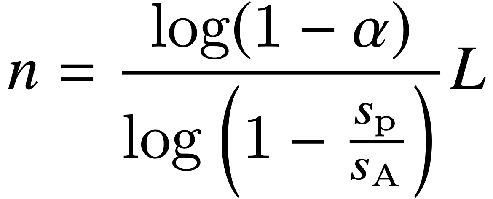
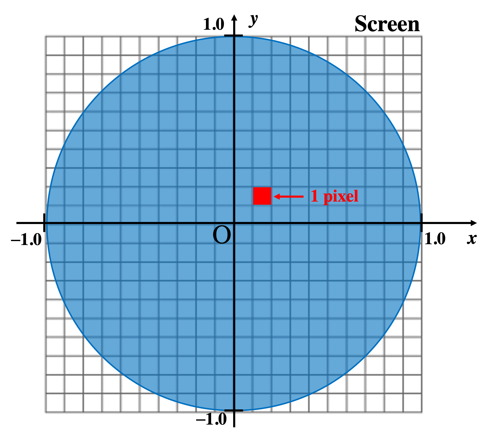
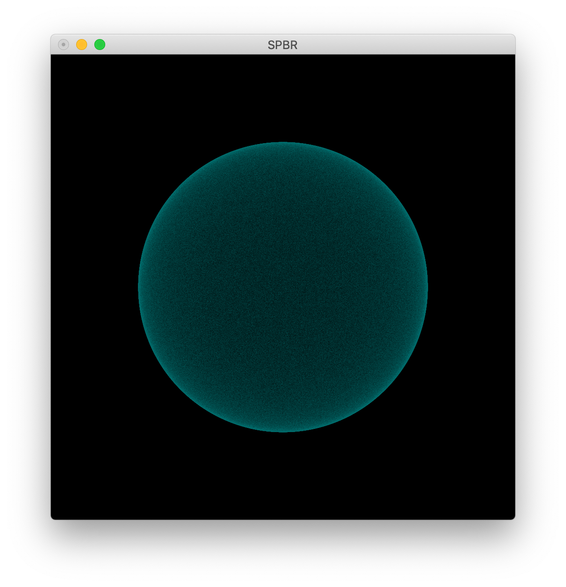

確率的ポイントレンダリング
ここでは，点群データの半透明可視化手法である「確率的ポイントレンダリング（Stochastic Point-based Rendering; SPBR) 」を用いて点群データの可視化を行っていく．
（SPBRの詳細は参考文献：
Satoshi Tanaka, Kyoko Hasegawa, Yoshiyuki Shimokubo, Tomonori Kaneko,Takuma Kawamura, Susumu Nakata, Saori Ojima, Naohisa Sakamoto, Hiromi T. Tanaka, and Koji Koyamada,
“Particle-Based Transparent Rendering of Implicit Surfaces and its Application to Fused Visualization”,
EuroVis 2012, pp.25–29 (short paper), Vienna
※SPBRは PBVRをボリュームデータからサーフェスデータへ拡張した手法であり，
- ＊ 点の生成，
- ＊ 点の投影，
- ＊ 画像のアンサンブル平均（平均回数をリピートレベルとよぶ），
- ＊ 半透明画像を生成，
は同様の手順である．
SPBRでは曲面上に点が一様に存在すると仮定すると，点密度（点数 n ）と不透明度 α に以下のような関係式が定義できる（詳細は上述の論文を参考）．
ただし．s_p は点の断面積，s_Aは曲面全体の面積，L はリピートレベルを表す．
つまり，SPBRでは可視化結果の不透明度は，
・点数
・リピートレベル
に依存する．
ただし，一般的に点の可視化（ポイントレンダリング）は1ピクセル相当の点で描画するため，スクリーンの解像度にも不透明度が依存してしまう．
ここではスクリーンの解像度（点の断面積 s_p）について，説明する．
下の様な球を20×20の解像度のスクリーンに原点を中心とした半径1の球を投影する事を考える．

ここで，点の断面積 s_p とは「スクリーン座標系における1ピクセルを世界座標系に逆変換したときの大きさ」である．
上の図の例でいえば，半径1の球を20×20の解像度のスクリーンに投影したときに，1ピクセルを球と同じ座標系に変換したらいくつになるか？を考えれば良い．
つまり，球は幅が 2 で，スクリーンは幅 20 ピクセルなので，この例の場合には，
1ピクセルの幅 = 2/20 = 0.1 となる．
別の例として，スクリーンの解像度が 512 × 512 になれば
1ピクセルの幅 = 2/512 = 0.00390625 となり，ピクセルの幅が小さくなることが分かる．
つまり，スクリーンの解像度によって s_p の値が変化する．
今，簡単のために縦横のサイズが同じ球を例に見ているが，実際は縦横のうち大きい方に合わせる（画面からオブジェクトがはみ出さないように投影する）．
例 SPBRの実装 〜球面上に一様サンプリング〜
実際に，半径1の球に点を生成するプログラムを作って，SPBRで半透明可視化を行うプログラムを作成していこう．
ここでは，不透明度とリピートレベル，スクリーンの解像度を入力パラメタとして設定し，球面上にサンプリングする点数を計算する．
1. 作業ディレクトリの作成
作業ディレクトリに「spbr」というディレクトリを作成して，移動して下さい．
$ mkdir SPBR
$ cd SPBR
2. main.ccp の作成
「main.cpp」というファイルを作成して下さい．
このプログラム例では，不透明度を 0.2, リピートレベルを 50, スクリーンの解像度を 512 とし，また球の半径は 1.0 で作成した点の色をシアン ( 0, 255, 255 ) と固定することとする．これらを固定パラメタとして，最初に書いておくこととする．
int main( int argc, char** argv )
{
const double ALPHA = 0.2; // 不透明度
const int REPEAT_LEVEL = 50; // リピートレベル
const int IMAGE_RESOLUTION = 512; // スクリーンの解像度
const unsigned char POINT_COLOR[3] = { 0, 255, 255 }; // 点の色（シアン）
const double RAD = 1.0; // 球の半径
//---- ここから下にプログラムを追記していく
}
3. 生成点数の計算
設定したパラメタから，球面上に生成するのに必要な点数を計算する，ここでは，簡単のため球がスクリーンいっぱいに投影すると仮定して点の断面積を求める．
（ただし，KVSではオブジェクトがはみ出さないようにマージンが設定されており，正確には
kvs::detail::CalculateSubpixelLength( ) 関数を通して点の断面積を取得する方が理想的である）
また，点数の計算は double型で行った後に，整数型にキャストする．
double diameter = 2.0 * RAD; // 球の直径
// ピクセルの幅を球の幅とスクリーンの解像度から概算
double pixel_width = diameter / (double)IMAGE_RESOLUTION;
double pixel_area = pixel_width * pixel_width; // 点の断面積
double area = 4.0 * M_PI * RAD * RAD; // 球の表面積
// 定義式から球面上に必要な点の数を計算する
double nall =
( log(1.0 - ALPHA) / log(1.0 - pixel_area/area) * (double)REPEAT_LEVEL );
size_t numVert = (size_t)nall; // 整数型にキャスト
4. 球面上に一様な点をサンプリングする
numVert 個の点を球面状にサンプリングすることを考えよう．
簡単には，球を極座標で考え，

θとφを乱数で生成して点を生成する方法が考えられる．但し．この場合には，z の値が±1 の付近（地球でいう北極・南極の辺り）で点密度が高くなってしまい，SPBRでの曲面上で一様であるという仮定に従わない．
そこで，z の値が [-1, 1] で一様になるように考える， より， を代入して新たに [0, 1]で一様な乱数を s, t とすれば，上の式は，
で書き表すことができる．
※球の半径を変更したい場合は，x, y, zそれぞれに半径 r をかければよい．
ここで，s, t は乱数の生成で用いた一様乱数 kvs::MersenneTwister を用いる．
また，球面上の法線は球を とすれば，法線は （法線ベクトルは正規化する）で求めることができる，
std::vector <kvs::Real32> coords; // 全点の位置情報を格納
std::vector <kvs::Real32> normals; // 全点の法線情報を格納
std::vector <kvs::UInt8> colors; // 全点の色情報を格納
kvs::MersenneTwister uniRand; // 一様乱数 s, t
for( size_t i = 0; i < numVert; i++ ) { // numVert 個の点をランダムに生成する
//--- 球面上に一様な点を生成する
double z = RAD * ( -2.0 * uniRand() + 1.0); // ここでのuniRand() は上式の s
double sinTheta = sqrt( 1.0 - z * z );
double phi = 2.0 * M_PI * uniRand(); // ここでのuniRand() は上式の t
double x = RAD * sinTheta * cos( phi );
double y = RAD * sinTheta * sin( phi );
// ランダムに生成した位置座標を格納
coords.push_back( (float)x );
coords.push_back( (float)y );
coords.push_back( (float)z );
// 法線を計算して，登録する
kvs::Vector3f norm( (float)x, (float)y, (float)z );
norm.normalize( ); // 正規化を行う
normals.push_back( norm.x() );
normals.push_back( norm.y() );
normals.push_back( norm.z() );
// 色を登録する（ここでは全ての点は同じ色とする）
colors.push_back( POINT_COLOR[0] );
colors.push_back( POINT_COLOR[1] );
colors.push_back( POINT_COLOR[2] );
} 5. PointObjectの生成
生成した点の情報から，kvs::PointObject のインスタンスを作成する．
kvs::PointObject *point = new kvs::PointObject();
point->setCoords( kvs::ValueArray<kvs::Real32>( coords )); // 位置情報
point->setNormals( kvs::ValueArray<kvs::Real32>(normals ) ); // 法線情報
point->setColors( kvs::ValueArray<kvs::UInt8>( colors ) ); // 色情報
point->updateMinMaxCoords(); // 登録した点群の位置情報の最大値・最小値を求める
point->print( std::cout ); // 生成したPointObjectの情報を標準出力
6. Renderer の生成
SPBRではPBVRと同様にkvs::glsl::ParticleBasedRenderer を使い，リピートレベルを設定する．
また，SPBRでは不透明度が1ピクセルの大きさによることから，ここでは，KVSの標準機能である粒子拡大（点がカメラからの距離に応じて拡大されて提示される）を無効にする．
kvs::glsl::ParticleBasedRenderer* renderer =
new kvs::glsl::ParticleBasedRenderer();
renderer->setRepetitionLevel ( REPEAT_LEVEL ); // リピートレベルの設定
renderer->disableZooming(); // 粒子拡大を無効化 7．描画
描画についてはこれまでと同様に，kvs::Application と kvs::Screen を使う．
Screenの解像度が変わってしまうと，描画結果として不透明度が変わってしまうため，点数の計算に使った解像度を設定する．また，半透明描画を行うため，背景色を黒にすることで，可視化結果への背景色の影響を無視することにする．
最後に，ScreenにPointObjectとParticleBasedRendererを登録して描画する．
kvs::glut::Application app( argc, argv );
kvs::glut::Screen screen( &app );
// Screeの解像度を設定
screen.setGeometry( 0, 0, IMAGE_RESOLUTION, IMAGE_RESOLUTION );
// 背景色を黒に設定
screen.setBackgroundColor( kvs::RGBColor ( 0, 0, 0 ) );
screen.setTitle( "SPBR" );
screen.registerObject( point, renderer );
screen.show();
return( app.run() );
8. ヘッダファイル
使用したKVSクラスをインクルードします．ここでは，
- kvs::MersenneTwister
- kvs::PointObject
- kvs::glsl::ParticleBasedRenderer
- kvs::glut::Application
- kvs::glut::Screen
を使用したので以下をインクルードする．
#include <kvs/MersenneTwister>
#include <kvs/PointObject>
#include <kvs/ParticleBasedRenderer>
#include <kvs/glut/Application>
#include <kvs/glut/Screen>
9. まとめ
以上をまとめたプログラムはこちら： SPBR.zip
10. コンパイルと実行
作成したプログラムをコンパイル，実行しよう．
KVSプログラムをコンパイルするためにはkvsmakeコマンドを用いてMakefileを作成した後に．コンパイルを行う．
$ kvsmake -G <-- Makefile の作成
$ kvsmake <-- コンパイル
エラーなくコンパイルできたら，実行してみよう．
$ ./SPBR
以上を実行すると，半透明なシアン色の球が描画できる．

問題 不透明度を変更してみよう
上の例では不透明度を 0.2 で固定していたので，標準入力から不透明度を入力できるようにプログラムを変更し，点数がどのように変わるか調査せよ．
また，不透明度は 0 より大きく，1より小さい値 ( 0 < α < 1 ) になるようにエラー処理を行うこと，
※あまり1に近い値を入力すると点数が膨大になるため， 0.99 程度で止めておくのが現実的である．
応用 PLYデータをSPBRで可視化してみよう
前のページのPLYデータの読み込みとこのページのSPBRレンダラの設定の部分を合わせて，PLYデータを読み込んで半透明可視化を行うプログラムを完成させよ．
また，PLYデータ（計測データ）はこのページのように曲面上に点を生成することが困難である．
計測データの半透明可視化をどのように実現しているか調査せよ．
Modefied at April 10, 2023